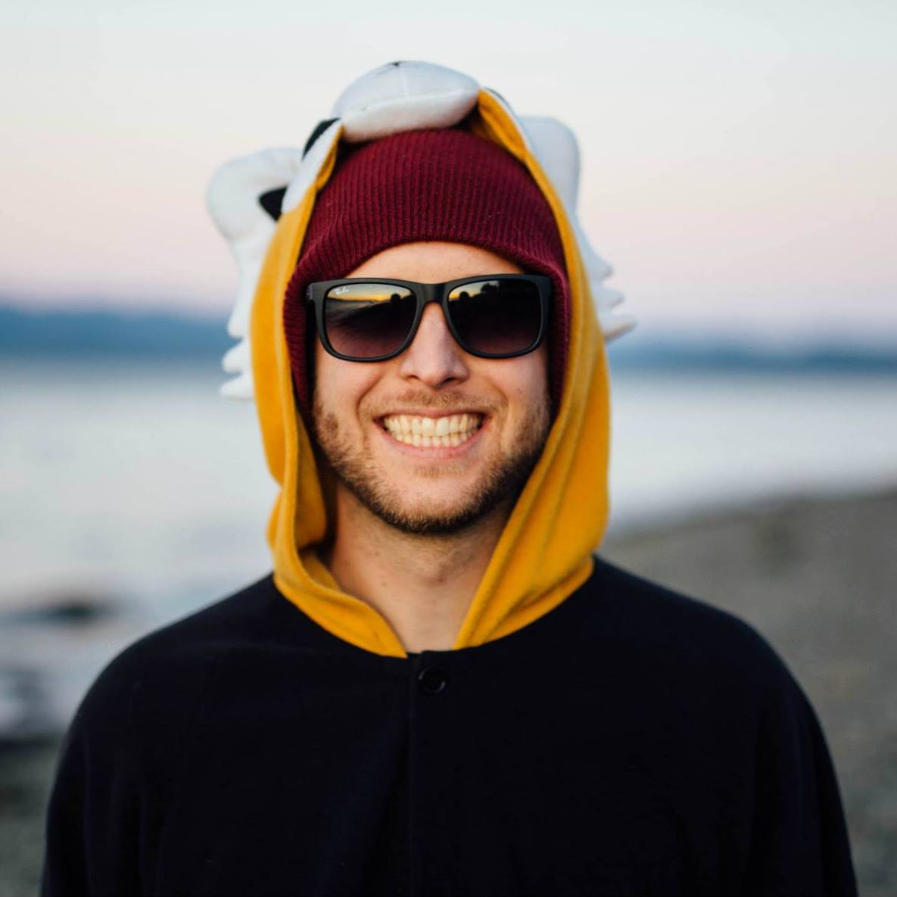

I love the outdoors
Ever since I was a little kid I was playing in the dirt or snow outside!
Some of my favorite activies include, but are not limited to
- Snowboarding
- Mt Biking
- Backpacking
- Traveling
- Photography
But who are you really?
 I was born in San Diego but I grew up in Spokane WA. After highschool I bounced around for a few years before I landed in Bellingham WA! Bellingham was my home for ten years and a piece of my heart will always live there. Last year I took a giant leap of faith and left Bellingham into the world of unknowns! I bought a camera and spent a year exploring life through a lens. For four months I traveled solo through SE Asia and met the most amazing people.
While I was in Asia I explored lots of yoga and meditation. I spent a month living at an Ashram with yoga instructors from India. We only ate vegan, meditated 5-10 times a day and practiced Asanas twice a day. During one of my meditation sessions I had a revelation that I needed to move to Portland. Little did I know that this path would lead me to Alchemy Code lab.
I first discovered coding last year while I was in Indonesia. I met several people in internet cafes who were working for American companies but living wherever they wanted. I knew then that this was the type of lifestyle I wanted to pursue, although at the time I did not believe I was smart enough to pursue a career in coding. I spent the last year exploring graphic design and Photography as an option for me to become a digital nomad. Luckily the skills I have learned on the Adobe suites will come in handy now that I am learning web and app development. I am excited to see how this course goes!
Fun Facts about me
- I have broken ten bones
- I have skydived in California
- My favoirte color is blue
- My dog is named after a Star Wars character